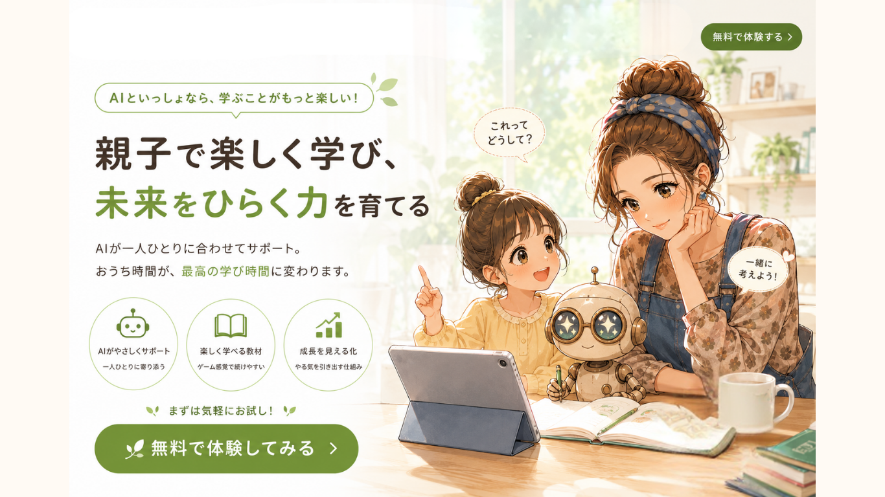

10問でわかる、親子の好奇心タイプ
子どもの「なんで？」を、才能の芽に変える関わり方診断
毎日の声かけや見守り方から、あなたの強みと、子どもの好奇心を伸ばすヒントがわかります。
診断をはじめる所要時間：約2分｜登録不要｜スマホでかんたん
「この関わり方でいいのかな？」と思ったことはありませんか。
忙しい毎日の中でも、子どもの好奇心を大切にしたい。そんなママが、自分らしい関わり方を見つけるための診断です。
今の強みがわかる
普段の声かけや行動から、子どもに与えている良い影響を見える化します。
伸ばし方がわかる
子どもの「やってみたい」「なぜ？」を学びにつなげる一歩がわかります。
LINEで深掘りできる
公式LINEではAI活用や子育ての情報を発信中。タイプ別の詳しい結果も受け取れます。
診断結果は4つの日本語タイプ
安心安心サポータータイプ
意味づけ意味づけナビゲータータイプ
見守り見守りクリエイタータイプ
共創共創チャレンジャータイプ
まずは10問の無料診断へ
診断サイトに移動して、あなたのタイプを確認できます。